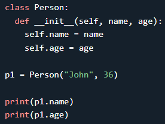

Python is an object oriented programming language.
Almost everything in Python is an object, with its properties and methods.
A Class is like an object constructor, or a "blueprint" for creating objects.
syntax:
class Name:
statement
name = Name()


Note: p1 is an instance of the class, x is an object of the class and MyClass.x is attribute reference
and p1.x is instance variable
The self Parameter
The self parameter is a reference to the current instance of the class, and is used to access variables that belongs to the class.
It does not have to be named self, you can call it whatever you like, but it has to be the first parameter of any function in the class:


The __init__() Function
All classes have a function called __init__(), which is always executed when the class is being initiated.
Use the __init__() function to assign values to object properties, or other operations that are necessary to do when the object is being created:

The __str__() Function
The __str__() function controls what should be returned when the class object is represented as a string.
If the __str__() function is not set, the string representation of the object is returned:
 ->
->
 ->
->
The __repr__() Function
The __repr__() function controls what should be returned when the class object is called from the terminal.

Instance Objects
an instance object is a specific instance of a class

here p1 has all of the attributes and methods defined in the class
Method Objects
Objects can also contain methods. Methods in objects are functions that belong to the object.
Note: pass and del keyword can also be used to delete the object and it's values also to make an empty class
Class and Instance Variables
Instance variables are for data unique to each instance and class variables are for attributes and methods shared by all instances of the class: